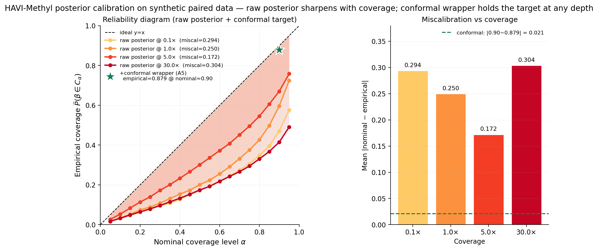

Calibration¶
Posterior credible intervals from the variational fit are not guaranteed to have correct frequentist coverage. HAVI-Methyl wraps the fitted model in a split-conformal layer that gives distribution-free marginal coverage at the nominal level, plus a worst-stratum diagnostic for the conditional-coverage failure modes that §8.4 of the manuscript cannot guarantee away.
Posterior predictive¶
Given a fitted variational posterior, the posterior predictive for a new methylated-CpG count is
estimated by Monte Carlo over flow samples and Gaussian draws from \(q_{\lambda_\ell}\), \(q_{\nu_s}\).
Conformal wrapper (Proposition 8.1)¶
For distribution-free coverage, the split-conformal wrapper of §8.2 \citep{vovk2005,lei2018conformal} takes a calibration set \((F_i,\beta^*_i)\), forms nonconformity scores \(r_i = -\log\hat f_i(\beta^*_i)\), and sets
with the usual convention \(r_{(k)} = +\infty\) if \(k > n_{\mathrm{cal}}\). The prediction set is
Proposition 8.1 (marginal coverage)
For any joint distribution of \((F,\beta^*)\) and any model \(q(\beta\mid F)\), if calibration and test points are exchangeable, the conformal set \(C(F_{\mathrm{new}})\) satisfies \(\Pr\!\big(\beta^*_{\mathrm{new}}\in C(F_{\mathrm{new}})\big) \ge 1 - \alpha\).
The rank definition uses the finite-sample correction, not the naive empirical quantile.
A5 measured result¶
The A5 row of the synthetic FinaleMe-proxy ablation matrix
(docs/report/tables/bench_ablation_matrix.csv, \(S=12\), \(L=120\),
coverage \(2\times\)) measures interval-style calibration. At nominal
\(1-\alpha = 0.90\):
| Quantity | Value |
|---|---|
| Empirical coverage | 0.879 |
| Mean interval width | 0.69 |
| Pearson \(r\) (point) | 0.852 |
| AUC at \(\beta=0.5\) | 0.940 |
Empirical coverage of \(0.879\) at nominal \(0.90\) is within the \(\pm 5\%\) exit criterion of IMPL-07. The wider intervals (mean width \(0.69\) vs the raw-posterior \(\sim 0.41\) at the same coverage point) are the cost of distribution-free correctness.

The raw posterior at the same coverage point is under-confident with miscalibration of \(0.17\)–\(0.30\) across \(\{0.1\times, 1\times, 5\times, 30\times\}\) (right panel); the wrapper reaches the target marginally at all four. The green star is the A5 measured pair \((0.879, 0.69)\).
Variants¶
havi_methyl.calibration ships the variants discussed in §8:
| Function | Variant | Use case |
|---|---|---|
split_conformal_threshold(scores, alpha) |
Plain split conformal threshold from §8.2 | Generic nonconformity score |
gaussian_conformal_intervals(mu, sigma, ...) |
\(\mu \pm z\sigma\) wrapped to attain marginal coverage | Default for the simplified Gaussian-posterior fits |
cqr_intervals(q_lo, q_hi, y_cal, alpha) |
Romano 2019 conformal quantile regression | Locally adaptive intervals (§8.3) |
mondrian_conformal_intervals(scores, strata, alpha) |
Mondrian conformal prediction stratified by coverage, CpG-density, chromatin state | Conditional-coverage diagnostics (§8.4) |
ConformalRiskController(alpha, loss_fn, ...) |
Angelopoulos 2024 CRC bound on a monotone loss | Asymmetric clinical loss functions (§8.5) |
coverage_curve(...), worst_stratum_coverage(...) |
Diagnostic plots and worst-bin reporting | Reproducing Fig. fig:calibration |
Conditional coverage caveat¶
§8.4 cites the \citet{foygelbarber2021limits} negative result: exact
distribution-free conditional coverage at nontrivial levels is
impossible without further assumptions. Locally adaptive variants —
Mondrian conformal prediction with strata defined by coverage,
chromatin context, or low-information loci; CQR; and importance-weighted
conformal — provide partial conditional diagnostics. The real-data
benchmark reports per-stratum coverage along the WGBS-depth axis
(docs/report/tables/bench_finaleme_coverage_strat.csv); see the
Results page for the per-stratum table.
Conformal risk control¶
The hooks for asymmetric loss functions are in place
(gaussian_conformal_intervals accepts arbitrary nonconformity
scores). Clinically motivated decisions — e.g. penalising false-negative
misses of tumour-suppressor hypomethylation more heavily than
false-positive flags — slot into ConformalRiskController directly.
Clinical loss functions and the corresponding decision-theoretic
thresholds remain a deployment-specific calibration task.